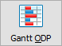
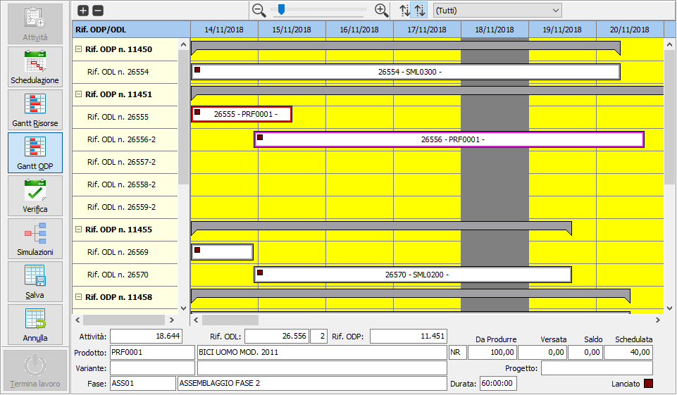
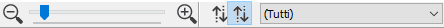
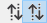
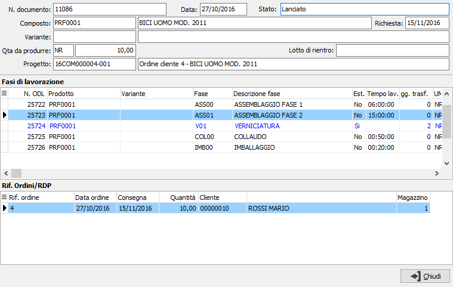

Gantt ODP

Questa funzionalità rappresenta lo strumento di visualizzazione grafica dei vari ODP presenti nell’orizzonte di schedulazione. La visualizzazione è organizzata per ODP/ODL e non sono consentite modifiche.Viene visualizzata l’intera struttura dell’ODP quindi anche le eventuali fasi esterne, calcolate in base ai giorni di trasferimento indicate sul ciclo di produzione, queste vengono visualizzate in colore differente.
La visualizzazione del gantt è completamente personalizzabile nei colori, nelle dimensioni di default compreso quanto deve essere visualizzato sopra i singoli ODL, tramite la specifica Configurazione gantt.

La sezione di sinistra riporta gli ODP con all'interno le relative attività/ODL, se suddivise a livello di ODP viene indicato anche il progressivo; tramite i pulsanti è possibile aprire o chiudere tutti i gruppi contemporaneamente; agendo sul +/- di fianco all'ODP è possibile aprire/chiudere il singolo ODP in modo da analizzarlo singolarmente.
La sezione di destra contiene le attività riportate sugli orizzonti temporali; selezionando una singola attività vengono evidenziate sul gantt le attività collegate (le barre si alzano ed il colore del bordo cambia) e compaiono, nel pannello inferiore, i dati relativi all'attività stessa con l'indicazione dello stato dell'attività (quadrato in basso a destra) che compare anche sulla barra del gantt; inoltre se l'attività risulta versata compare, sul gantt, una barra di completamento all'interno della barra dell'attività in basso.
Sopra la sezione di destra è presente la barra dello zoom ed una barra di pulsanti

La barra dello zoom consente di aumentare o ridurre il livello di zoom delle colonne del calendario; i pulsanti consentono un aumento/diminuzione del 10%, tramite la barra si può andare dal 10% di riduzione fino al 800% di ingrandimento.
 |
I pulsanti, sono alternativi (premendo uno si rilascia l'altro) e consentono di modificare la visualizzazione del gantt in ordine di data inizio attività oppure in ordine di riferimento ODP. |
Nel caso sia attiva la gestione progetti e commesse sarà presente questa casella che contiene i riferimenti progetto di tutti gli ODP presenti nel gantt; selezionando un progetto saranno visualizzati sul gantt solo gli ODP di quel progetto; sono presenti, all'interno dell'elenco anche le voci "(Tutti)" e "(Senza progetto)" per visualizzare tutti gli ODP ed eventualmente quelli senza progetto. |
|
|
 Il doppio clic del mouse sull'attività mostra il dettaglio dell'attività stessa. La finestra mostra partendo dall'ODP tutti gli ODL collegati e relativi riferimenti ordini/RDP collegati all'attività su si era posizionati; nel dettaglio delle fasi compaiono anche le fasi esterne (evidenziate in blu) e la fase relativa all'attività corrente appare selezionata. |